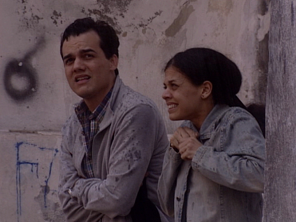

A HORA DA ESTRELA (La Hora de la Estrella)
| (Beta Digital, 40 min, color, 2003) Episodio de la serie "Cena Aberta" de la emisora de TV Globo. Macabéa, alagoana de 19 años, tímida, solitaria y trabajando como dactilógrafa en Río de Janeiro, pierde el empleo, el novio y, al salir de la cartomante, es atropellada y muere. Este es el final de la novela de Clarice Lispector, pero solo el comienzo de la historia, contada por muchas otras Macabéas. |
 Foto de Roberto Henkin: Wagner Moura e Ana Paula Bouzas |
{kind=link}
Dirección General: Jorge Furtado
Dirección: Jorge Furtado, Guel Arraes y Regina Casé
Producción Ejecutiva: Nora Goulart y Luciana Tomasi
Guión: Jorge Furtado e Guel Arraes
Dirección de Fotografia: Roberto Henkin
Dirección de Arte: Fiapo Barth
Diretora Asistente: Ana Luiza Azevedo
Montaje: Giba Assis Brasil y Alfredo Barros
Una Producción TV Globo
Realización Casa de Cinema PoA
Reparto Principal:
Regina Casé (Presentadora, Glória, Adivina)
Ana Paula Bouzas (Macabéa)
Wagner Moura (Olímpico)
Crítica
"El paso en frente que Escena Abierta propone en la teledramaturgia brasileña carga consigo un estímulo a la literatura. ¿Cuánta gente no habrá ido a buscar “La Hora de la Estrella – hasta el libro ha sido un personaje - en bibliotecas y librerías después de la exhibición? En un país de pocas letras como Brasil, tratar el tema en el horario master de la TV es una tarea de coraje. Escena Abierta asume el riesgo de parecer un programa literario de absorción restricta a iniciados. No lo es. Es entretenimiento de los buenos, que ofrece más de lo trivial."
(Marcelo Perrone, ZERO HORA, Porto Alegre, 23/11/2003)
"LA HORA DE LA ESTRELLA, primer episodio de la serie, rindió bellos momentos para el telespectador al mismo tiempo en que dejó evidente las grandes dificultades de este tipo de programa. El libro de Clarice Lispector es tan maravilloso que cualquier cosa adicionada a él parece innecesaria. (...) Los puntos altos fueron exactamente la escenificación de la historia con la excelente Ana Paula Bouzas (que consiguió lo que parecía imposible: hacer que la gente se olvide de Marcélia Cartaxo) y Wagner Moura. Toda la parte documental, a pesar de interesante, no haría la menor falta. Es como si dos excelentes programas fueran mostrados concomitantemente, y, por más contradictorio que pueda parecer, uno molestaba al otro."
(Zeca Kiechaloski, ABC DOMINGO, Novo Hamburgo, 23/11/2003)
"Esta es, por supuesto, una novedad en el género de adaptación – la presencia física y útil del libro. (...) Las declaraciones de las muchachas distanciaron la adaptación del juego meramente literario, llevándolo de vuelta a las cercanías de la TV, al contrario de los que hicieron los trechos de entrevista, buscados en los archivos, de Clarice sobre a obra. La literatura se quedó en medio de todo esto, y ayudó a construir un programa de TV de muy buena calidad."
(Haroldo Ceravolo Sereza, O ESTADO DE SÃO PAULO, 20/11/2003)
"Fue bueno el estreno del programa ESCENA ABIERTA, de la Globo. El episodio de estreno, basado en el cuento La Hora de la Estrella, de Clarice Lispector, fue feliz al aliar ficción a la realidad."
(CZ, Jornal O POPULAR, Goiânia, 20/11/2003)
"ESCENA ABIERTA es un bienvenido soplido de novedad a la televisión. (...) logró sonar interesante incluso al contar en pocas escenas la historia escrita por Clarice Lispector, entremezclando rápidos e impresionantes trechos de entrevistas de la autora. Al final, el mismo tempo respeta la decisión de Clarice y no deja el telespectador irse a la cama triste con la historia. Ni triste con la televisión brasileña."
(Ulisses Mattos, JORNAL DO BRASIL, Río de Janeiro, 19/11/2003)"Y justo vendría la excelente sorpresa de ESCENA ABIERTA, Clarice Lispector en carne y hueso, ahí nomás, en la pantalla, en imágenes de archivo, a derretir el maquillaje como una legítima Macabéa. Le dolía todo, como al personaje. Algo que las nordestinas convidadas lo habían ensayado, pero no dieron cuenta. No por falta de dolores universales -Tolstói vive en las venas de todo el mundo-, pero debido al exceso de metalenguaje y entrometimiento de la narradora Casé. Incluso al cruzar en contramano, se oyó un 'llamen al doble- una gracia que no está de acuerdo con los misterios de Clarice. Distanciamiento brechtiano fuera de hora y lugar."
(Xico Sá, FOLHA DE SÃO PAULO, 19/11/2003)
"La nueva hazaña de Regina Casé, junto con Guel Arraes y Jorge Furtado, es pura emoción. En el primer episodio, la historia elegida fue "La Hora de la Estrella", de Clarice Lispector. Y para vivir el papel de Macabéa, personaje central de la trama, Regina hizo un laboratorio con varias representantes de la moza ingenua y sencilla nordestina. Ese, sin duda, el punto alto del proyecto. Moderno que sólo, ESCENA ABIERTA innova mostrando el proceso - comienzo, medio y fin, pasando atrás del telón - de la producción de un programa de ese tipo. La semana que viene hay más."
(Joyce Pascovich, revista virtual GLAMURAMA, 19/11/2003)
18/11/2003